DC Motor Position: Digital Controller Design
Key MATLAB commands used in this tutorial are: tf , c2d , minreal , zpk , feedback , stairs , step
Contents
In this example, the controller will be designed applying a Root Locus method. A sample-data DC motor model can be obtained from conversion of an analog DC motor model, as we will describe. According to the DC Motor Position: System Modeling page, the continuos open-loop transfer function for DC motor's position in the Laplace domain is the following.
(1)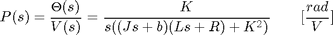
The structure of the control system has the form shown in the figure below.

Also from the main page, the design requirements for a 1-radian step reference are the following.
- Settling time less than 0.040 seconds
- Overshoot less than 16%
- No steady-state error, even in the presence of a step disturbance input
Creating a sampled-date model of the plant
The first step in the design of a digital control system is to generate a sampled-data model of the plant. Therefore, it is necessary to choose a frequency with which the continuous-time plant is sampled. In choosing a sampling period, it is desired that the sampling frequency be fast compared to the dynamics of the system in order that the sampled output of the system captures the system's full behavior, that is, so that significant inter-sample behavior isn't missed.
Let's create a continuous-time model of the plant. Create a new m-file and add the following MATLAB code (refer to the main problem for the details of getting these commands). Running the m-file within the MATLAB command window will generate the output shown below.
J = 3.2284E-6;
b = 3.5077E-6;
K = 0.0274;
R = 4;
L = 2.75E-6;
s = tf('s');
P_motor = K/(s*((J*s+b)*(L*s+R)+K^2));
zpk(P_motor)
ans =
3086245930.9988
------------------------
s (s+1.454e06) (s+59.23)
Continuous-time zero/pole/gain model.
The use of the zpk command above transforms the transfer function into a form where the zeros, poles, and gain can be seen explicitly. Examining the poles of the plant (or its frequency response), it is clear that the pole at -1.45e06 contributes very little to the response of the plant. The gain crossover frequency of the plant is approximately 5 Hz. Therefore, choosing a sampling period of 0.001 seconds (frequency of 1000 Hz) is significantly faster than the dynamics of the plant. This sampling period is also fast compared to the speed that will be achieved by the resultant closed-loop system. A sample time of 0.001 seconds is specifically 1/100 of the required time constant and 1/40 of the required settling time.
In this case, we will convert the given transfer function from the continuous Laplace domain to the discrete z-domain. MATLAB can be used to achieve this conversion through the use of the c2d command. The c2d command requires three arguments: a system model, the sampling time (Ts), and the type of hold circuit. In this example, we will assume a zero-order hold (zoh) circuit. Refer to the Introduction: Digital Controller Design page for further details. Adding the following commands to your m-file and running in the MATLAB command window generates the sampled-data model shown below.
Ts = 0.001;
dP_motor = c2d(P_motor, Ts, 'zoh');
zpk(dP_motor)
ans =
0.0010389 (z+0.9831) (z+9.256e-07)
----------------------------------
z (z-1) (z-0.9425)
Sample time: 0.001 seconds
Discrete-time zero/pole/gain model.
From the above, notice that there is a pole and zero very near to z = 0 that effectively cancel. This cancellation in the transfer function can be accomplished by applying the minreal command with a tolerance of 0.001. Cancellation of this pole and zero will reduce the order of our transfer function and will help to avoid numerical difficulties in MATLAB. Applying the minreal command, therefore, produces the following reduced order transfer function. Note the absence of the pole and zero near z = 0.
dP_motor = minreal(dP_motor,0.001); zpk(dP_motor)
ans =
0.0010389 (z+0.9831)
--------------------
(z-1) (z-0.9425)
Sample time: 0.001 seconds
Discrete-time zero/pole/gain model.
We would now like to analyze the closed-loop response of the system without any additional compensation. First, we have to close the loop of the transfer function by using the feedback command. After closing the loop, let's inspect the closed-loop step response with the zero-order hold. This can be accomplished by using the step and stairs commands. Since the step command is fed a discrete model, it will output a vector of discrete samples at the sample time Ts associated with the model (click here for further details). The syntax below specifies to simulate the step response for 0.5 seconds. The stairs command draws these discrete data points as a stairstep, just like what would be produced by a zero-order hold circuit. Add the following code at the end of your previous m-file and rerun it. You should generate a plot like the one shown below.
sys_cl = feedback(dP_motor,1); [x1,t] = step(sys_cl,.5); stairs(t,x1) xlabel('Time (seconds)') ylabel('Position (radians)') title('Stairstep Response: Original') grid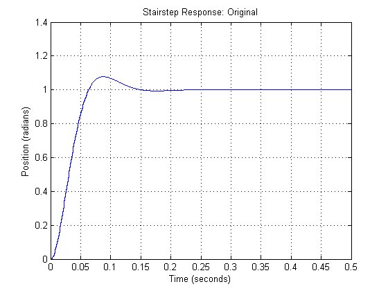
Root locus design
We will now employ a root locus design methodology to generate a digital controller for our system. The main idea of a root locus approach to design is to modify the closed-loop response by placing the closed-loop poles of the system at desired locations. Adding poles and zeros to the the original open-loop transfer function via the controller allows us to reshape the root locus in order to place the closed-loop poles at the desired locations. This approach can also be used for discrete-time models. We will use the SISO Design Tool graphical user interface (GUI) for designing our controller. Adding the command sisotool('rlocus',dP_motor) to your m-file will open the SISO Design Tool when run at the command line.
Two windows will open initially with the SISO Design for SISO Design Task window having the form shown in the figure below. This figure shows the root locus of the transfer function d_Pmotor passed through the sisotool function. This figure appears initially due to the addition of the string 'rlocus' to the function call. If the string 'rlocus' is omitted, the default initial window includes the open-loop Bode plot in addition to the root locus plot.
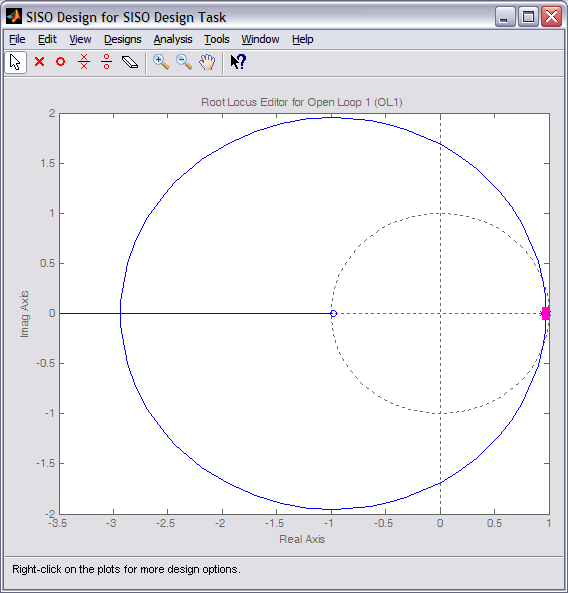
Recall from our previous controller designs that we have added an integrator to our compensator in order to reject the effect of a constant disturbance in steady state. We can add integral control through the SISO Design Tool interface under the Compensator Editor tab of the Control and Estimation Tools Manager window. Specifically, an integrator is added to our controller by right-clicking on the Dynamics section of the window and selecting Add Pole/Zero > Integrator from the resulting menu. The figure below illustrates what the Control and Estimation Tools Manager window should look like.
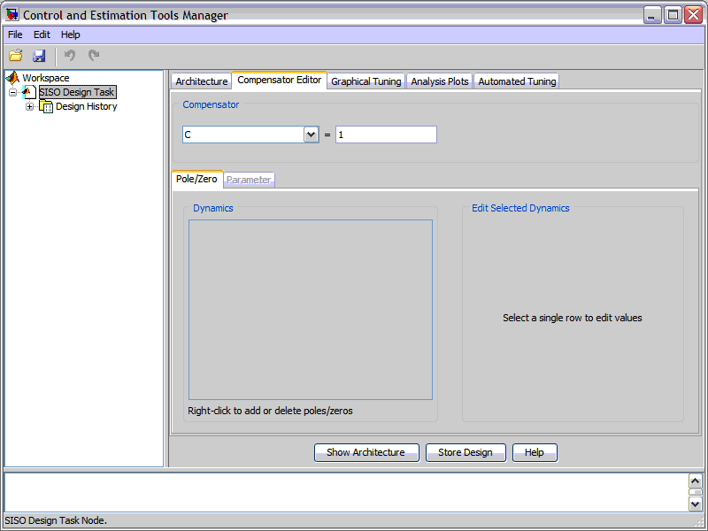
Integral control in the continuous-time domain is 1 / s. The SISO tool uses a forward difference approximation for mapping from the s-plane to the z-plane as described by s = (z-1) / Ts, where Ts is the sample time being employed. Therefore, the addition of the integrator will add an additional pole at 1 on the root locus plot. See below for the resulting root locus plot where the red x denotes the location of the compensator pole at z = 1.
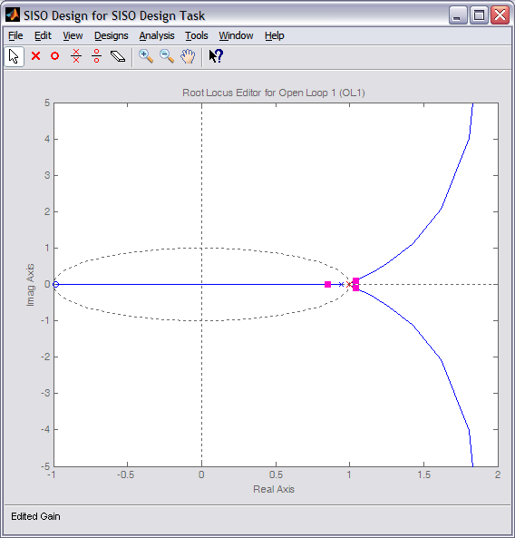
The default format for compensators in the SISO Design Tool is Time constant form. For the remainder of this problem, we will design the compensator in Zero/pole/gain form. This change can be made by choosing SISO Tool Preferences ... from the Edit menu of the Control and Estimation Tools Manager window. The compensator parameterization can then be changed under the Options tab.
By default, the root locus plot includes the unit circle shown in the above figure by the dashed line. Recall that for a discrete-time system, closed-loop poles located within the unit circle indicate a stable closed-loop system. From the above, we can see that the after adding the extra pole at 1, the root locus had three poles near 1. This caused the root locus to move to the right (outside of the unit circle) indicating that the closed-loop response will be more unstable.
Therefore, we will add a zero near 1, inside the unit circle, to cancel one of the poles and pull the root locus in. We will specifically add a zero at z = 0.95. In general, we must add at least as many poles as zeros for the controller to be causal. This zero can be added to our compensator in the same manner as the integrator was added above. The only difference is that you will choose Real Zero from the right-click menu and then must specify in the Location cell that the zero is to be placed at 0.95. The root locus plot should now appear as shown below.
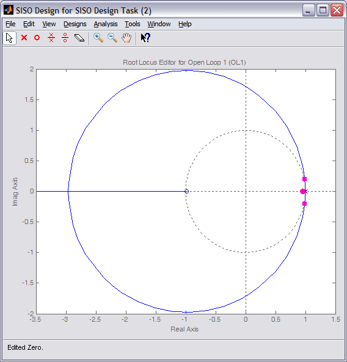
The addition of the integrator has helped with the requirement on disturbance rejections, however, the above root locus indicates that the closed-loop system cannot be made robustly stable through further tuning of the loop gain. We also have not addressed our other design requirements. To help us in this regard, let's identify the region of the complex plane where the closed-loop poles must be located.
These regions can be added to our root locus by choosing Design Requirements from the right-click menu. Then choose new and set the overshoot to be less than 16%. This process can then be repeated to add the settling time requirement of less than 0.04 seconds. The resulting figure is shown below where the unshaded region identifies where the closed-loop poles must be located to meet our given transient requirements. These regions assume a canonical second-order system, which we do not have currently, but the regions can still help guide our design.
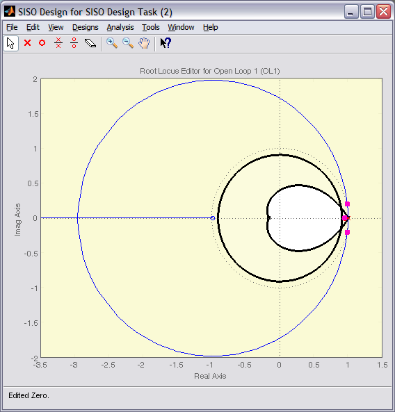
From the above figure, we can see that the two dominant branches of our root locus do not pass through the required region. Therefore, we need to add poles and/or zeros to our compensator to bend the root locus into the desired region. Let's first try cancelling the zero at approximately -0.98 by adding a pole nearby. This can be done in the same manner described above for the integrator and the real zero. It is desirable to cancel this zero since it will add overshoot to the step response. The addition of this pole will result in two of the branches of the root locus going off to the right and outside of the unit circle.
We will attempt to pull these branches in by placing two additional zeros near the desired closed-loop pole locations. These zeros can be added via the Compensator Editor tab as done above. In this case, however, we will place the zeros using a graphical tuning approach. Specifically, select a single o from the tool bar at the top of the SISO Design for SISO Design Task window. Then click the resulting "pointer" on the real axis to place the zero. Repeat this process to add a second zero. The effect of moving these two zeros can then be seen by moving the pointer over the corresponding o on the root locus and clicking on it. While holding down the mouse button, you can then move the zero along the real axis to visualize the effect of different locations. Through trial and error we arrive at a location of 0.8 for the two zeros. In order to make the controller causal, we need to add an additional pole. Using a graphical approach again, we can add a real pole by choosing an x from the tool bar at the top of the SISO Design for SISO Design Task window. Through trial and eror we arrive at a pole location of 0.6. The resulting root locus is shown below.
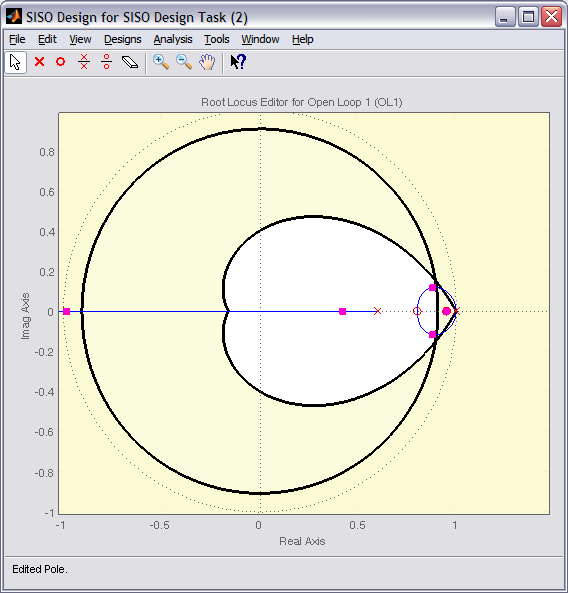
Next we must choose a loop gain in order to move the closed-loop pole locations along the root locus to the desired location. Since our closed-loop system is not canonical second order, we will have to employ some trial and error to identify the exact pole locations. In order to assist us in this regard, we can open a plot for the closed-loop step response so that we can observe the effect of the gain changes on the actual step response, without having to rely on a second-order idealization.
The closed-loop step response plot is opened from the Control and Estimation Tools Manager window under the Analysis Plots tab as shown below. In this tab, select Step from the drop-down window for Plot 1 under the Analysis Plots section of the window. Then under the Contents of Plots section of the window check the box for Plot 1 on the first row, which corresponds to a plot for the Closed Loop r to y. Finally, click the Show Analysis Plots button to produce the closed-loop step response.
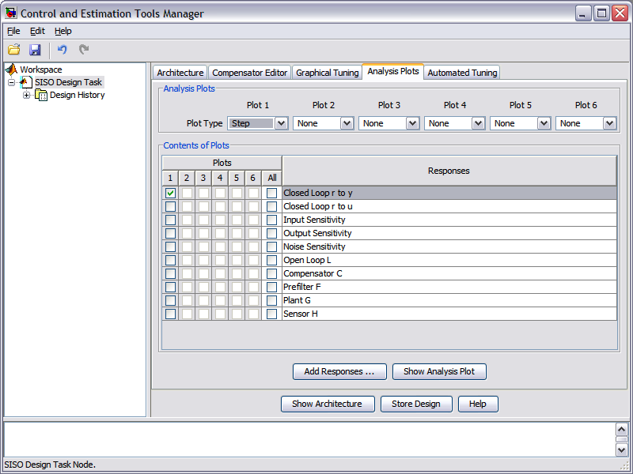
The resulting step response plot with loop gain of 1 appears to meet the settling time requirement, but not the overshoot requirement. In order to be certain, we can define the allowed step response shape by choosing Design Requirements from the right-click menu of the step response plot and choosing the overshoot to be 16% and the settling time to be 0.040 seconds. Note that you will need to choose a rise time of less than 0.040 seconds, even though we have no such requirement.
We will now modify the loop gain to meet the overshoot requirement. Using a graphical tuning approach, grab one of the pink boxes on the root locus plot by clicking on it, then drag the box along the locus. Each box represents the location of a closed-loop pole and dragging the box along the locus changes the loop gain to the value that places that closed-loop pole at that specified location. Through trial and error, a loop gain of 800 reduces the overshoot of the associated step response to approxomately 10% while achieving a settling time of approximately 0.02 seconds. Furthermore, the steady-state error goes to zero when there is no disturbance present. The resulting step response plot is shown below.
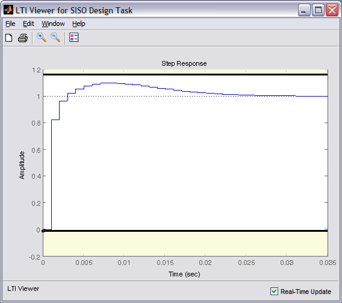
The only thing now left to verify is the system's disturbance rejection properties. A plot of the system's response to a step disturbance can be generated from the Analysis menu of the SISO Design for SISO Design Task window. Instead, we will generate the disturbance response plot from the MATLAB command line. Before we do that, however, we must first export the compensator we have designed in the SISO Design Tool to the workspace. This is accomplished by selecting Export from the File menu of the Control and Estimation Tools Manager window. You then select Compensator C and click on the Export to Workspace button. Once you have done this, then enter the following instructions in the command window to produce the response plot shown below.
dist_cl = feedback(dP_motor,C);
[x2,t] = step(dist_cl,.25);
stairs(t,x2)
xlabel('Time (seconds)')
ylabel('Position (rad)')
title('Stairstep Disturbance Response with Compensation')
grid
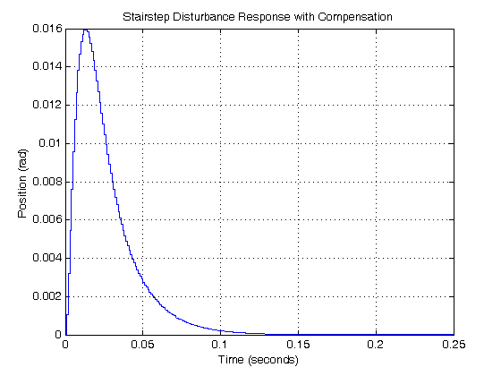
Examination of the above shows that for a step disturbance, the steady-state error will still go to zero. Employing the property of superposition, it is also apparent that the total response will have overshoot less than 16% and will reach steady-state well within the 40 millisecond requirement.